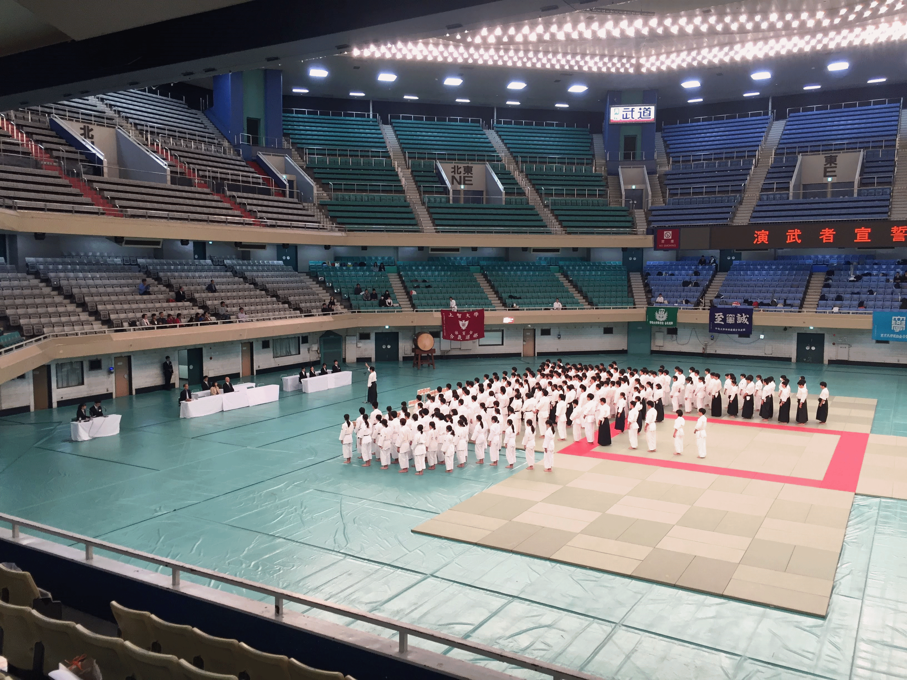

全日本学生合気道連盟

メニュー
活動記録
2018年10月6日 武道館演武大会
加盟校
- 大阪商業大学
- 関西福祉科学大学
- 金沢大学
- 京都産業大学
- 近畿大学
- 国士舘大学
- 上智大学
- 成城大学
- 専修大学
- 大正大学
- 拓殖大学
- 中央大学
- 帝京大学
- 天理大学
- 東京大学
- 東京医科大学
- 東洋英和女学院大学
- 富山大学
- 明治学院大学
- 明治大学
- 横浜国立大学
- 早稲田大学
連盟誌
連絡先
〒102-0091 東京都千代田区北の丸公園2-3日本武道館学生武道クラブ内全日本学生合気道連盟
aikido.renmei[at]gmail.com
twitter: @renmei_aiki